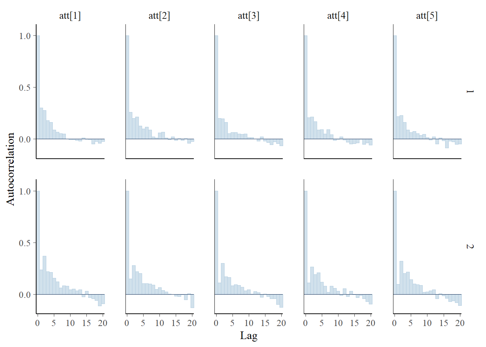
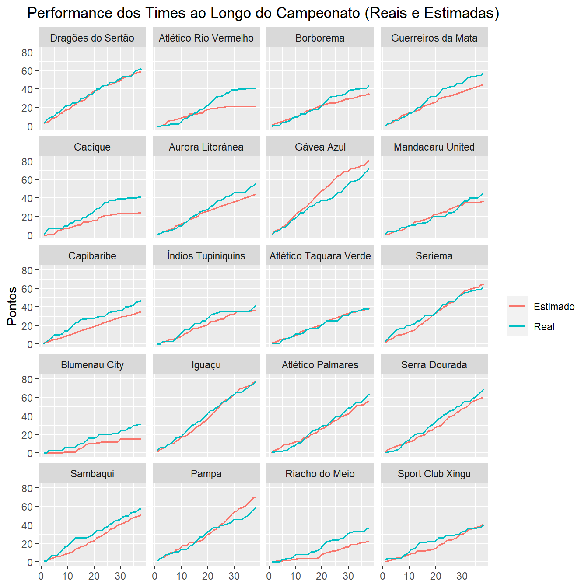

require(tidyverse)
require(plotly)
require(knitr)
require(rstan)
require(reshape2)Modelo Poisson Simples Identificável 1
Importanto as bibliotecas necessárias
Gerando os jogos
num_teams <- 20
# Dicionario para relacionar o id de um time com seu nome
team_names <- c("Dragões do Sertão", "Atlético Rio Vermelho", "Borborema",
"Guerreiros da Mata", "Cacique", "Aurora Litorânea",
"Gávea Azul", "Mandacaru United", "Capibaribe",
"Índios Tupiniquins", "Atlético Taquara Verde", "Seriema",
"Blumenau City", "Iguaçu", "Atlético Palmares",
"Serra Dourada", "Sambaqui", "Pampa",
"Riacho do Meio", "Sport Club Xingu")
games <- data.frame(
h = rep(1:num_teams, each = num_teams),
a = rep(1:num_teams, times = num_teams)
)
games <- games[games$h != games$a, ]Definindo os valores reais
set.seed(40)
mu_att <- 0
tau_att <- 16
sd_att <- sqrt(1/tau_att)
mu_def <- 0
tau_def <- 16
sd_def <- sqrt(1/tau_def)
home_effect <- rnorm(1, 0.2, 0.1)
att_effects <- rnorm(num_teams, mu_att, sd_att)
def_effects <- rnorm(num_teams, mu_def, sd_def)- \(home\) = 0.2477739
- \(\mu_{att}\) = 0
- \(\sigma_{att}\) = 0.25
- \(\mu_{def}\) = 0
- \(\sigma_{def}\) = 0.25
Esses foram os efeitos de ataque e defesa escolhidos:
Gerando os resultados dos jogos
set.seed(40)
simulate_games <- function(home_team, away_team, num_games){
theta_1 <- home_effect + att_effects[home_team] + def_effects[away_team]
theta_2 <- att_effects[away_team] + def_effects[home_team]
y1 <- rpois(num_games, exp(theta_1))
y2 <- rpois(num_games, exp(theta_2))
return(list(y1 = y1, y2 = y2))
}
num_games <- length(games$h)
results <- simulate_games(games$h, games$a, num_games)
games$y1 <- results$y1
games$y2 <- results$y2Alguns dos resultados gerados foram:
| Mandante | Visitante | Gols_do_Mandante | Gols_do_Visitante |
|---|---|---|---|
| 1 | 2 | 3 | 0 |
| 1 | 3 | 2 | 1 |
| 1 | 4 | 1 | 0 |
| 1 | 5 | 0 | 0 |
| 1 | 6 | 0 | 0 |
| 1 | 7 | 1 | 0 |
Análise dos resultados gerados
Alguns resultados que nos dão uma visão geral dos dados são:
- O time com o melhor ataque da competição foi o Gávea Azul balançando as redes 73 vezes.
- O time com o pior ataque da competição foi o Capibaribe marcando 23 gols.
- O time com a melhor defesa da competição foi o Aurora Litorânea tendo sofrido um total de 24 gols.
- O time com a pior defesa da competição foi o Sport Club Xingu tendo sofrido um total de 67 gols.
- A maior goleada do campeonato foi a vitória do Pampa por 9 a 1 em cima do Atlético Rio Vermelho
- O Iguaçu foi o campeão com 77 pontos
- O Blumenau City foi o lanterna com 31 pontos
- O Cacique foi o primeiro time fora da zona, se salvando do rebaixamento com 41 pontos
Clique para ver a tabela do campeonato completa
| Posicao | Time | Pontos | Vitorias | Empates | Derrotas | GM | GS | SG |
|---|---|---|---|---|---|---|---|---|
| 1 | Iguaçu | 77 | 23 | 8 | 7 | 65 | 46 | 19 |
| 2 | Gávea Azul | 72 | 21 | 9 | 8 | 73 | 53 | 20 |
| 3 | Serra Dourada | 69 | 19 | 12 | 7 | 49 | 34 | 15 |
| 4 | Atlético Palmares | 64 | 18 | 10 | 10 | 54 | 42 | 12 |
| 5 | Dragões do Sertão | 62 | 17 | 11 | 10 | 50 | 35 | 15 |
| 6 | Seriema | 62 | 18 | 8 | 12 | 59 | 43 | 16 |
| 7 | Pampa | 59 | 16 | 11 | 11 | 64 | 53 | 11 |
| 8 | Guerreiros da Mata | 58 | 17 | 7 | 14 | 38 | 31 | 7 |
| 9 | Sambaqui | 58 | 16 | 10 | 12 | 45 | 39 | 6 |
| 10 | Aurora Litorânea | 56 | 13 | 17 | 8 | 33 | 24 | 9 |
| 11 | Capibaribe | 47 | 11 | 14 | 13 | 23 | 24 | -1 |
| 12 | Mandacaru United | 46 | 12 | 10 | 16 | 41 | 52 | -11 |
| 13 | Borborema | 44 | 10 | 14 | 14 | 31 | 32 | -1 |
| 14 | Índios Tupiniquins | 42 | 12 | 6 | 20 | 43 | 42 | 1 |
| 15 | Atlético Rio Vermelho | 41 | 11 | 8 | 19 | 39 | 46 | -7 |
| 16 | Cacique | 41 | 12 | 5 | 21 | 38 | 41 | -3 |
| 17 | Sport Club Xingu | 40 | 11 | 7 | 20 | 70 | 67 | 3 |
| 18 | Atlético Taquara Verde | 38 | 8 | 14 | 16 | 35 | 33 | 2 |
| 19 | Riacho do Meio | 36 | 9 | 9 | 20 | 31 | 33 | -2 |
| 20 | Blumenau City | 31 | 9 | 4 | 25 | 37 | 48 | -11 |
Estimando os parâmetros com o STAN
data <- append(list(ngames = num_games, nteams = num_teams), as.list(games))
model <- stan_model("./models/model.stan")
fit <- sampling(model, data = data, iter = 2000, chains = 2, cores = 2)data {
int<lower=1> ngames;
int<lower=1> nteams;
int h[ngames];
int a[ngames];
int y1[ngames];
int y2[ngames];
}
parameters {
real home;
vector[nteams - 1] att_star;
vector[nteams - 1] def_star;
real mu_att;
real mu_def;
real<lower=0> tau_att;
real<lower=0> tau_def;
}
transformed parameters {
vector[nteams] att;
vector[nteams] def;
for (t in 1:nteams - 1) {
att[t] = att_star[t];
def[t] = def_star[t];
}
att[nteams] = 0;
def[nteams] = 0;
}
model {
for (g in 1:ngames) {
y1[g] ~ poisson_log(home + att[h[g]] + def[a[g]]);
y2[g] ~ poisson_log(att[a[g]] + def[h[g]]);
}
home ~ normal(0, sqrt(1/0.0001));
mu_att ~ normal(0, sqrt(1/0.0001));
mu_def ~ normal(0, sqrt(1/0.0001));
att_star ~ normal(mu_att, sqrt(1 / tau_att));
def_star ~ normal(mu_def, sqrt(1 / tau_def));
tau_att ~ cauchy(0, 2.5);
tau_def ~ cauchy(0, 2.5);
}
generated quantities {
int y1_pred[ngames];
int y2_pred[ngames];
for (g in 1:ngames) {
y1_pred[g] = poisson_log_rng(home + att[h[g]] + def[a[g]]);
y2_pred[g] = poisson_log_rng(att[a[g]] + def[h[g]]);
}
}Visualizando os valores estimados



Simulando os resultados com os parâmetros estimados
Para simularmos os resultados do campeonato, usaremos a média da distribuição preditiva a posteriori dos parâmetros estimados
fit_df <- as.data.frame(extract(fit))
y1_pred_samples <- fit_df[, grepl("y1_pred", colnames(fit_df))]
y2_pred_samples <- fit_df[, grepl("y2_pred", colnames(fit_df))]
estimated_games <- games
mean_y1 <- round(apply(y1_pred_samples, 2, mean))
mean_y2 <- round(apply(y2_pred_samples, 2, mean))
estimated_games$y1 <- mean_y1
estimated_games$y2 <- mean_y2Resultados da simulação
Alguns resultados da competição simulada utilizando os parâmetros estimados:
- O time com o melhor ataque da competição foi o Gávea Azul balançando as redes 66 vezes.
- O time com o pior ataque da competição foi o Capibaribe marcando 35 gols.
- O time com a melhor defesa da competição foi o Capibaribe tendo sofrido um total de 35 gols.
- O time com a pior defesa da competição foi o Blumenau City tendo sofrido um total de 49 gols.
- A maior goleada do campeonato foi a vitória do Gávea Azul por 3 a 1 em cima do Atlético Rio Vermelho
- O Iguaçu foi o campeão com 77 pontos
- O Blumenau City foi o lanterna com 31 pontos
- O Cacique foi o primeiro time fora da zona, se salvando do rebaixamento com 41 pontos
Clique para ver a tabela do campeonato completa
| Posicao | Time | Pontos | Vitorias | Empates | Derrotas | GM | GS | SG |
|---|---|---|---|---|---|---|---|---|
| 1 | Gávea Azul | 81 | 23 | 12 | 3 | 66 | 46 | 20 |
| 2 | Iguaçu | 77 | 20 | 17 | 1 | 59 | 43 | 16 |
| 3 | Pampa | 70 | 18 | 16 | 4 | 58 | 44 | 14 |
| 4 | Seriema | 65 | 15 | 20 | 3 | 54 | 42 | 12 |
| 5 | Serra Dourada | 60 | 11 | 27 | 0 | 48 | 39 | 9 |
| 6 | Dragões do Sertão | 59 | 11 | 26 | 1 | 49 | 41 | 8 |
| 7 | Atlético Palmares | 56 | 12 | 20 | 6 | 52 | 43 | 9 |
| 8 | Sambaqui | 51 | 7 | 30 | 1 | 45 | 39 | 6 |
| 9 | Guerreiros da Mata | 45 | 4 | 33 | 1 | 42 | 38 | 4 |
| 10 | Aurora Litorânea | 44 | 3 | 35 | 0 | 39 | 36 | 3 |
| 11 | Sport Club Xingu | 42 | 6 | 24 | 8 | 44 | 40 | 4 |
| 12 | Atlético Taquara Verde | 39 | 2 | 33 | 3 | 40 | 38 | 2 |
| 13 | Mandacaru United | 37 | 5 | 22 | 11 | 43 | 42 | 1 |
| 14 | Índios Tupiniquins | 36 | 5 | 21 | 12 | 43 | 42 | 1 |
| 15 | Borborema | 35 | 1 | 32 | 5 | 38 | 37 | 1 |
| 16 | Capibaribe | 35 | 0 | 35 | 3 | 35 | 35 | 0 |
| 17 | Cacique | 24 | 3 | 15 | 20 | 41 | 44 | -3 |
| 18 | Riacho do Meio | 22 | 2 | 16 | 20 | 40 | 43 | -3 |
| 19 | Atlético Rio Vermelho | 21 | 3 | 12 | 23 | 41 | 45 | -4 |
| 20 | Blumenau City | 15 | 3 | 6 | 29 | 41 | 49 | -8 |
